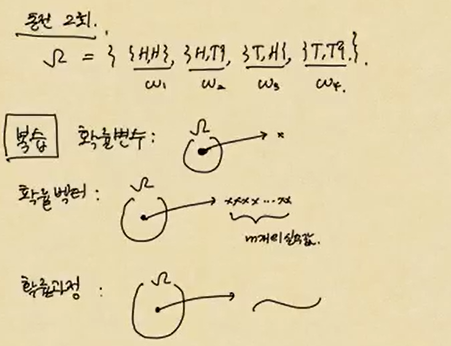
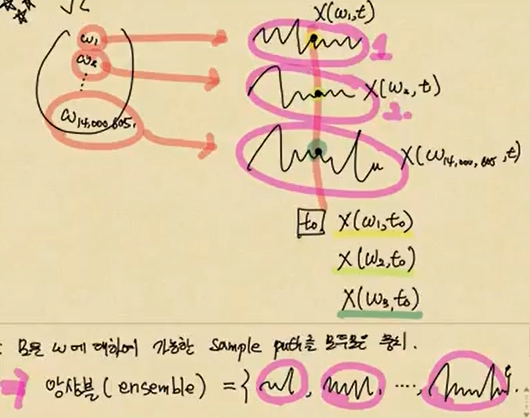
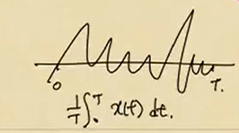

복습: 확률변수

기호정리
- 확률변수: \(X(w) = x\).
- 확률벡터: \(\bf{X}(w) = \left(X_1(w),\dots,X_m(w)\right)=(x_1,\dots,x_m)\)
- 확률과정: \(X(w,t) = x_t = x(t)\)
- 확률과정은 \(w\)와 \(t\)의 함수.
- \(X(w,t)\)를 \(X_t(w)\)로 표기하기도 함.
- 고정된 \(w \Rightarrow\) relization이 시간에 따른 함수
- 고정된 \(t \Rightarrow\) random variable이 함수
(참고) : 고정된 \(X(w,t)\)의 relization을 sample path 혹은 sample function이라고 부른다.
용어정리1 (\(\star\star\star\))
\(\Omega = \{w_1,\dots, w_{14,000,605}\}\) 이런 평행세계가 있다…

각각의 \(\omega\)에 매핑되는 함수(무한 개의 값들)가 있을 것이고, 시점을 \(t_0\)로 고정하면, 첫번째 평행세계에 대해서는 \(X(w_1, t_0)\), 두번째 평행세계에 대해서는 \(X(w_2, t_0)\), 세번째 평행세계에 대해서는 \(X(w_3, t_0)\)가 된다.
용어정리2
모든 \(\omega\)에 대하여 가능한 sample path를 모두 모은 뭉치. \(\Rightarrow\) 앙상블(ensemble)

앙상블 mean: 1번 timeseries, \(\dots\) 14,000,605번 timeseries를 다 더해서 평균을 낸 것
- 앙상블 mean : \(\sum_{i=1}^{14,000,605}\frac{1}{14,000,605}\times(w_1,t) \Rightarrow \sim\)어떤 함수값 (mean function이라고 표현을 많이 함.)

결국 화률변수 \(X(w)\)를 줄여서 \(X\)로 쓰고, 확률벡터 \(\bf{X}(w)\)를 줄여서 \(\bf{X}\)라 쓰고, 확률과정 \(X(w,t)\)를 줄여서 \(X(t)\)라고 쓴다.
- \(X(w) \to X\)
- \(\bf{X}(w) \to \bf{X}\)
- \(X(w,t) \to X(t)\) 또는 \(X_t\)
연속 시계열은 확률과정 그 자체이고, 이산 시계열은 원소의 수가 무한한 확률벡터라고 생각할 수 있다.우리가 많이 다루는 것은 이산 시계열이다.
시계열
무한차원의 확률벡터 or. 확률과정의 smaple 버전이라고 생각할 수 있다. \((x_1, x_2, \dots, \dots)\)
\(\omega\): 평행세계의 인덱스
\(\{Z_t(w), \quad t=1,2,\dots\}\)